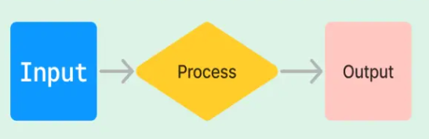
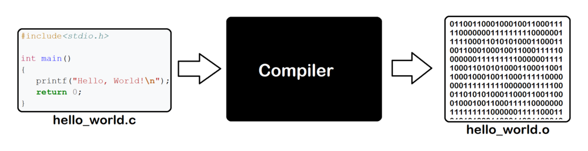
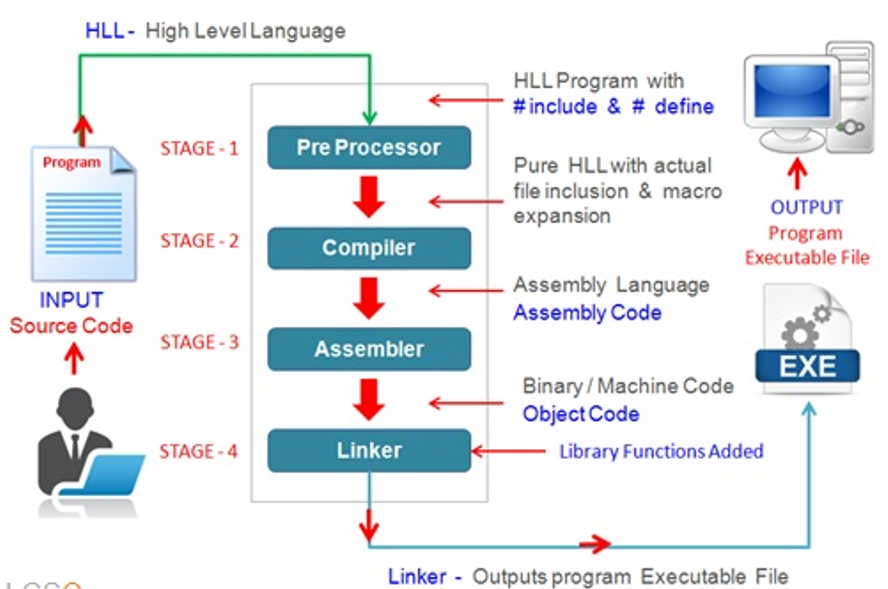
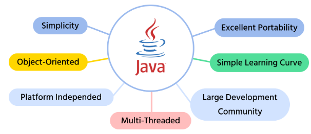
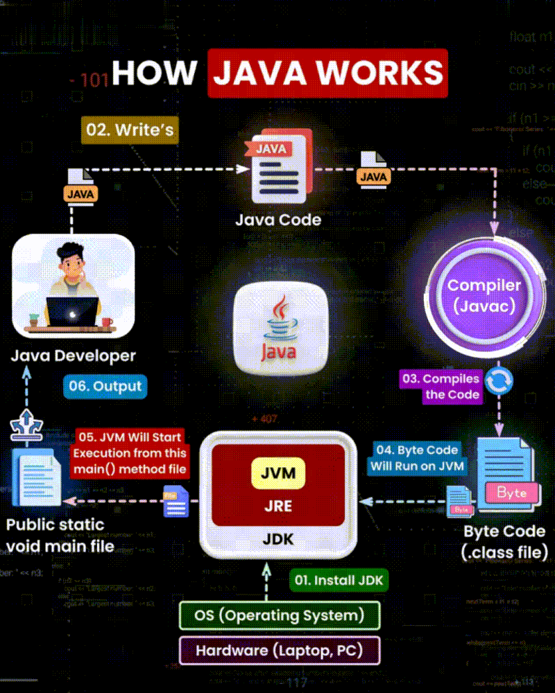
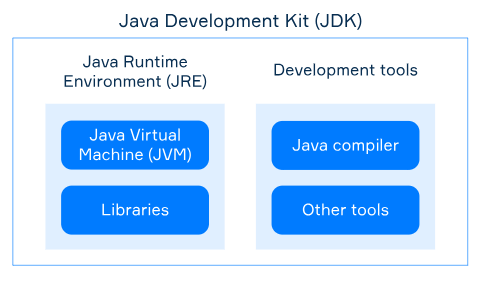
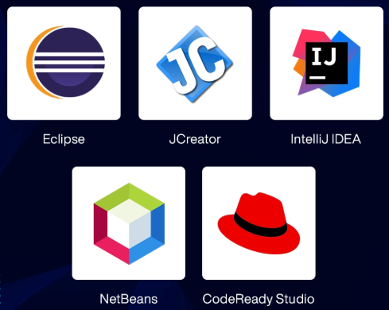
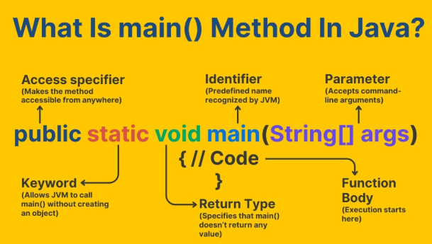

Conceptos Fundamentales
¿Qué significa programar?
Programar es el proceso de crear un conjunto de instrucciones que una computadora puede entender y ejecutar para realizar una tarea específica.
Programar significa crear una secuencia ordenada de instrucciones que un ordenador puede interpretar y ejecutar. Estas instrucciones no dejan lugar a ambigüedades: el sistema ejecuta exactamente lo que se le indica.
- Es la base de la informática
- Permite desarrollar software, aplicaciones y sistemas que utilizamos a diario
- Cada instrucción forma parte de un flujo que transforma datos de entrada en resultados de salida
¿Qué es un Programa Informático?
Un programa informático es el resultado final del proceso de programación. Está formado por instrucciones escritas en un lenguaje de programación que permiten automatizar una tarea.
- Los programas pueden ser muy simples o extremadamente complejos, pero todos siguen la misma idea básica: instrucciones + datos + ejecución.
- Un programa se organiza en bloques claramente definidos: clases, métodos, variables e instrucciones
- Cada bloque cumple una función concreta dentro del conjunto

Lenguajes de Programación
Los lenguajes de programación permiten escribir instrucciones de forma comprensible para las personas y transformarlas en un formato que la máquina pueda ejecutar.
| Tipo | Descripción | Ejemplos |
|---|---|---|
| Compilados | Se traducen completamente antes de ejecutarse | C++, Go, Rust |
| Interpretados | Se ejecutan línea a línea | Python, Swift, PHP |
| Mixtos | Combinan ambos enfoques | Java, C#, JavaScript |
Código Fuente
El código fuente es el lenguaje de alto nivel que entienden los humanos. Algunos lenguajes de alto nivel incluyen: Fortran, C, Pascal, C++, C#, Java.
- No tiene en cuenta el hardware específico
- Contiene números, operadores, sentencias, etc.
- La ejecución del código es secuencial
Compilación
Compilar es traducir el código fuente a lenguaje máquina (instrucciones binarias). Durante la compilación, se detectan errores en la sintaxis:
- Comandos mal escritos
- Variables de tipos diferentes
- Omisión de elementos necesarios

Código Máquina o Ensamblador
El código máquina es el lenguaje de bajo nivel que entienden las computadoras.
- Adaptado a cada tipo de ordenador
- Un programa hecho para PC no funcionará en MAC o Unix/Linux sin recompilar
- Es un archivo ejecutable sin errores de compilación

Tiempo de Ejecución
Pueden producirse errores (excepciones) en tiempo de ejecución que causan que un programa se bloquee o deje de ejecutarse:
- División por 0
- Acceso a una posición de memoria inexistente (array fuera de límites)
- Acceso a un recurso no disponible: fichero, red, BBDD, etc.
01 INTRODUCCIÓN - ¿Qué es Java?
En este curso utilizaremos Java, un lenguaje de programación muy popular y versátil. Java es un lenguaje de propósito general que se utiliza en una amplia variedad de aplicaciones, desde aplicaciones móviles hasta sistemas empresariales.

BYTECODE y JVM (Java Virtual Machine)
El resultado de un compilador de Java no es código ejecutable, sino código de bytes (BYTECODE), un lenguaje de bajo nivel optimizado para ejecutarse en tiempo de ejecución en la JVM (Java Virtual Machine).
- La ejecución del código queda confinada a la JVM
- De esta manera, queda restringido el acceso a memoria de los programas Java
- La máquina virtual de Java puede estar implementada en software, hardware, una herramienta de desarrollo o un navegador web
- La JVM lee y ejecuta código precompilado bytecode que es independiente de la plataforma (multiplataforma)

02 ENTORNO DE PROGRAMACIÓN - JDK y JRE
Java Development Kit (JDK)
El JDK (Java Development Kit) es un software que proporciona herramientas de desarrollo para la creación de programas en Java.
- Se ejecuta en la línea de comandos
- Ofrece dos programas principales:
javac- para compilarjava- para ejecutar
- Es un paquete completo de herramientas de Java
Java Runtime Environment (JRE)
JRE (Java Runtime Environment) incluye la JVM y las APIs de Java (incluidas en el JDK) para la ejecución de un programa. Se puede descargar gratuitamente desde Oracle.
Instalación
- Ambas herramientas se instalan creando sus propios directorios
- Es aconsejable referenciarlas en las variables de entorno del sistema operativo para facilitar su uso desde la línea de comandos
- Pueden descargarse gratuitamente desde la web oficial de Oracle

Entornos Integrados de Desarrollo (IDE)
Un IDE (Integrated Development Environment) es una aplicación informática que proporciona servicios integrales para facilitar al desarrollador el desarrollo de software.
Características principales de un IDE:
- Editor de código fuente con resaltado de sintaxis
- Herramientas de construcción automáticas
- Un depurador (debugger) para analizar la ejecución
- Permite trabajar con la versión de JDK que deseemos
- Autocompletado de código e inspección de errores
IDEs populares para Java:
- NetBeans - IDE de desarrollo gratuito y de código abierto, ideal para principiantes
- Eclipse - IDE muy popular, gratuito y con gran comunidad de desarrolladores
- IntelliJ IDEA - IDE profesional de JetBrains con versión community gratuita

03 MI PRIMER PROGRAMA
Estructura Básica
Trabajaremos con una única clase y definiendo código dentro del método main():
- Definiremos variables locales y sentencias dentro del método
main() - El nombre de la clase debe coincidir con el nombre del archivo
- Hasta la UF5 haremos programas con interacción con el usuario no gráfica (solo texto o aplicaciones de consola)
Método main()
Es el punto de entrada para cualquier programa Java.

Ejemplo Básico
package UFI;
public class Ej1 {
public static void main(String [] args){
//Imprimimos por pantalla
System.out.println("Hello world");
}
}
Comentarios en Java
Los comentarios hacen que el código sea más comprensible. Se pueden poner en cualquier parte del código y no son ejecutables. Hay tres tipos diferentes:
- Comentario de línea //: Desde el símbolo hasta el final de línea es un comentario
- Comentario de línea múltiple /* ... */: Todo lo comprendido entre estos símbolos es un comentario
- Comentario Javadoc /** ... */: Igual que el comentario de línea múltiple pero además la herramienta "Javadoc" integrada en el JDK genera documentación en formato .html
// Esto es un comentario de línea
/* Esto es un comentario
de múltiples líneas */
/**
* Esto es un comentario Javadoc
* Se usará para generar documentación
*/
04 TIPOS DE DATOS PRIMITIVOS
Clasificación de Tipos
Los tipos de datos que manipula Java se clasifican en dos grandes grupos:
- Primitivos: Es un tipo de dato que almacena un único valor (número, carácter, booleano)
- Objetos: Son datos más complejos que pueden estar constituidos por uno o varios datos
primitivos, así como también por otros objetos. Suelen tener predefinidos métodos que permiten
manipular dichos datos. Para crear este tipo de datos es necesario usar el método
new
Tabla de Tipos Primitivos
| Tipo | Keyword | Tamaño | Ejemplo |
|---|---|---|---|
| BOOLEANO | |||
boolean |
1 byte | true o false |
|
| ENTERO | |||
| byte | byte |
1 byte | [-128, 127] |
| short | short |
2 bytes | [-32768, 32767] |
| int | int |
4 bytes | [-2147483648, 2147483647] |
| long | long |
8 bytes | Valores muy grandes (agregar L al final) |
| DECIMAL (Flotante) | |||
| float | float |
4 bytes | 1256.89f (agregar f al final) |
| double | double |
8 bytes | 1256.89 |
| CARÁCTER | |||
| char | char |
2 bytes (UNICODE) | 'b' o '\u0062' |
Literales
Se denomina literal a un número presente en el código.
Tipos de Literales
- Enteros:
- Java los trata como
intpor defecto - Para
long, agregue unaLal final (ej:3000000000L)
- Java los trata como
- Decimales:
- Se trata como
doublepor defecto - Para
float, agregue unafal final (ej:1256.89f)
- Se trata como
Sistemas de Numeración para Literales
- Decimal:
123 - Binario:
0b11010001o0B11010001 - Octal:
017 - Hexadecimal:
0xFFE1o0XFFE1
Los literales pueden contener el símbolo _ para agilizar su lectura (no se permite al
principio, final o antes/después del punto).
Cadenas de Texto
Una cadena es un conjunto de caracteres incluidos entre comillas dobles. Se pueden incluir secuencias de escape:
| Secuencia | Descripción |
|---|---|
\' |
Comilla simple |
\" |
Comilla doble |
\\ |
Barra invertida |
\n |
Salto de línea |
\t |
Tabulación horizontal |
\r |
Retorno de carro |
String cadena1 = "Ejemplo de cadenas";
String cadena2 = "Ejemplo de \ncadenas";
String cadena3 = "Ejemplo\tde\tcadenas";
05 VARIABLES LOCALES
¿Qué es una Variable Local?
En Java hay tres tipos de variables según su ubicación en el código. En esta unidad trabajaremos con
variables locales, que son variables definidas en el bloque de código de un método (en
nuestro caso, el método main()).
Ámbito de una Variable
El ámbito define en qué partes del programa puede utilizarse una variable. Normalmente está limitado al bloque donde se declara.
- Una variable local solo es accesible dentro del método donde se declara
- El ámbito comienza cuando se declara la variable y termina al cerrar el bloque con
} - Las variables declaradas dentro de bloques anidados (como bucles) solo existen dentro de esos bloques
public class Ambito {
public static void main(String[] args) {
int a = 5; // Variable local del método main
if (a > 0) {
int b = 10; // Variable local del if
System.out.println(b); // Funciona
}
// System.out.println(b); // ERROR - b está fuera del ámbito if
}
}
Declaración de Variables
Una variable consta del tipo de primitivo u objeto que almacena y del identificador:
tipo nombre-var = valor;
// Ejemplos
char a = 'e';
int j = 3;
String h = "Hello world";
Ejemplos de Declaraciones
Correctas:
long zooAnimals; int numAnimals; zooAnimals=100L; numAnimals=100;long zooAnimals=100L; int numAnimals=100;short s1, s2; short s3=20, s4=23;
Incorrectas:
int num, char value;(de diferente tipo en la misma línea no es válido)byte f, byte a;(forma correcta:byte f, a;)
Reglas para Nombres de Variables, Clases y Métodos
- Pueden empezar por letra,
$ó_. Las letras posteriores pueden ser números - Solo están permitidos letras, números,
$y_ - No pueden nombrarse igual que las "reserved words" de Java
- Java es case-sensitive (diferencia entre mayúsculas y minúsculas)
Convención CamelCase
(Opcional pero MUY RECOMENDABLE)
- Métodos y variables:
int myNumber; - Clases:
public class MyClass {};
Inicialización de Variables
Las variables locales no se inicializan por defecto, deben estarlo antes de ser usadas. En caso contrario se produce un error en TIEMPO DE COMPILACIÓN.
public class Variables {
public static void main(String [] args){
int a=3; // Inicializada
int b; // No inicializada - ERROR si se usa
System.out.println(a);
System.out.println(b); // Error: variable b might not have been initialized
}
}
06 OPERADORES DE JAVA
¿Qué es un Operador?
Un operador es un símbolo especial que puede ser aplicado a un conjunto de variables o literales y que devuelve un resultado.
- Java cuenta con cuatro tipos de operadores: aritméticos, lógicos, relacionales y de asignación
- Tres tipos de operadores existen según el número de operandos: unary, binary, ternary
Orden de Ejecución (Precedencia)
- Si no hay paréntesis, se ejecutan los operadores por orden de PRIORIDAD
- Si dos operadores tienen el mismo orden de preferencia se ejecutan de izquierda a derecha
Operadores Aritméticos
Operadores binarios por orden de precedencia: multiplicación (*), división (/), módulo (%), suma (+), resta (-)
- Se pueden aplicar a cualquier primitivo, excepto a los booleanos
- Solo los operadores + y += se pueden aplicar a String para concatenaciones
- El operador % funciona con enteros negativos y decimales
Operadores Unitarios
+ / -: Indica si un número es positivo/negativo++ / --: Incrementa/decrementa un valor en 1!: Invierte el resultado de un valor booleano
Asignación Simple (=)
La variable ubicada en el lado izquierdo coge el valor a la derecha del símbolo:
int x = 3;
Casting (Conversión de Tipos)
- Java NO convierte automáticamente números grandes en números pequeños (cast)
- Sí lo hace al revés (promoción)
- Al hacer "cast" se puede perder precisión por "overflow" (demasiado grande) o "underflow" (demasiado pequeño)
int x = (int) 1.0; // Casting explícito
byte a = (byte)129; // Overflow
short y = (short) 1_000_000; // Pérdida de datos
Asignación Compuesta (+=, -=, *=, /=, %=)
Se implementan con mayor eficacia y hacen casting automáticamente:
y = y + 3; // Equivalente a:
y += 3;
Operadores Relacionales (<, <=, >, >=)
- Comparan dos expresiones y devuelven un booleano
- Solo se pueden aplicar a números primitivos
- Si alguno es más grande, se promociona automáticamente
Operadores Lógicos (&, |, ^)
Trucos:
- AND es solo "true" si ambos operandos son "true"
- OR es solo "false" si ambos operandos son "false"
- XOR es solo "true" si ambos operandos son diferentes
- Cuando se aplican a booleanos se les conoce como "operadores lógicos"
- Cuando se aplican a números se les conoce como "operadores bitwise"
- Operadores short-cut AND (&&), OR(||): No ejecutan el operando de la derecha si no es necesario
Operadores de Igualdad (==, !=)
- Si dos números son de tipo diferente, automáticamente se promociona
- Compara dos primitivos o dos referencias a objetos (@), incluyendo "null"
- Dos referencias son iguales solo si apuntan al mismo objeto o ambas son nulas